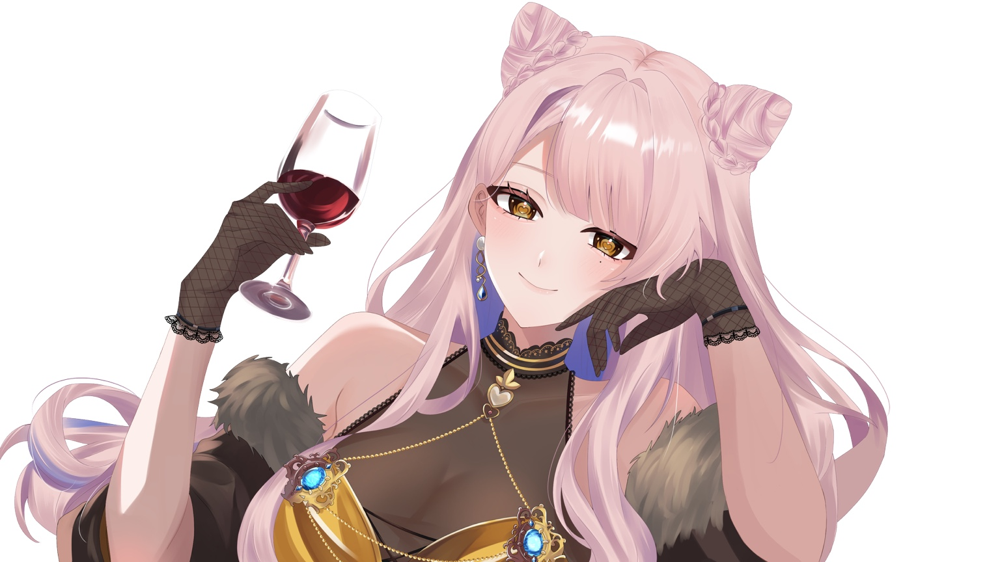
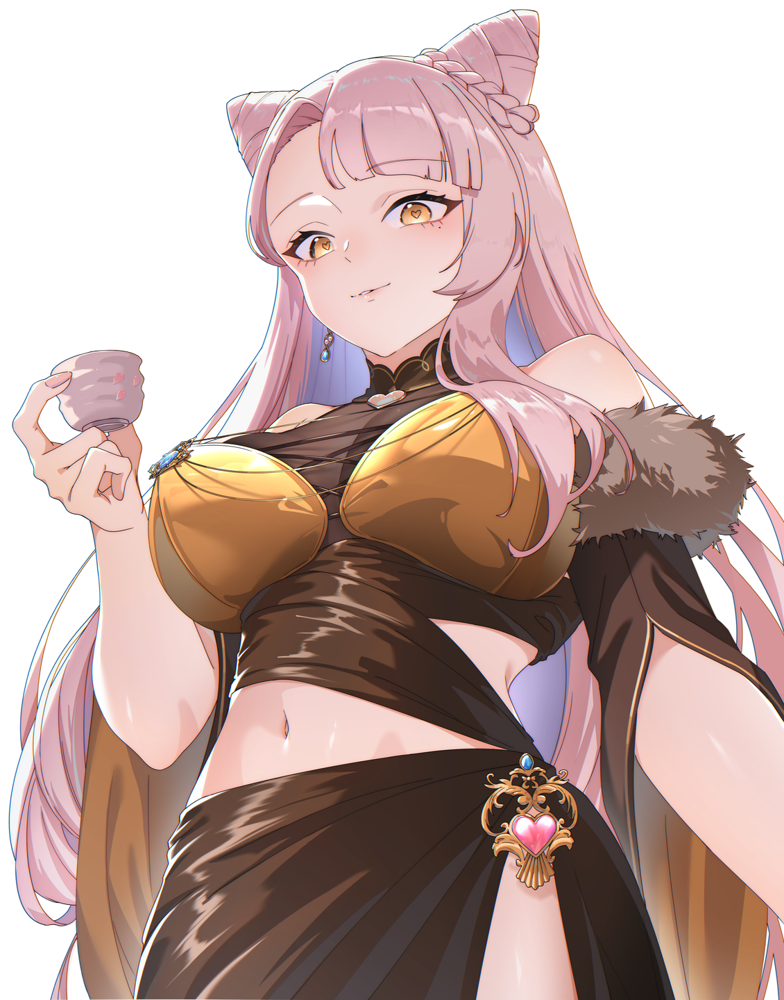
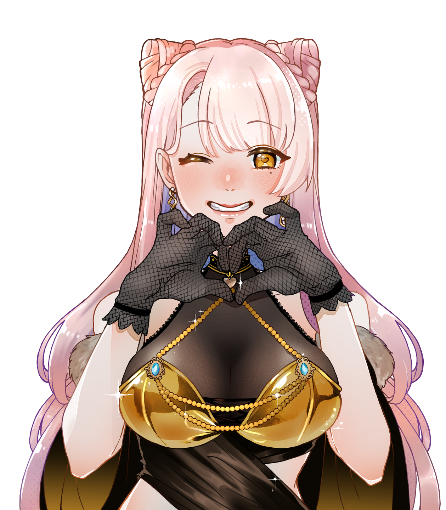
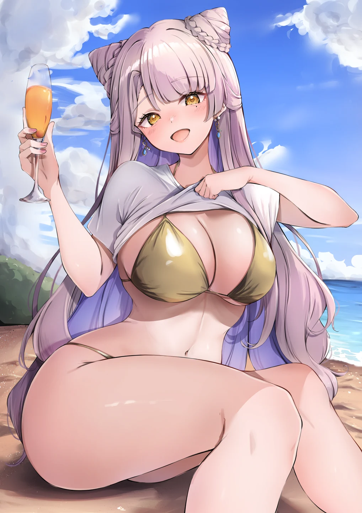
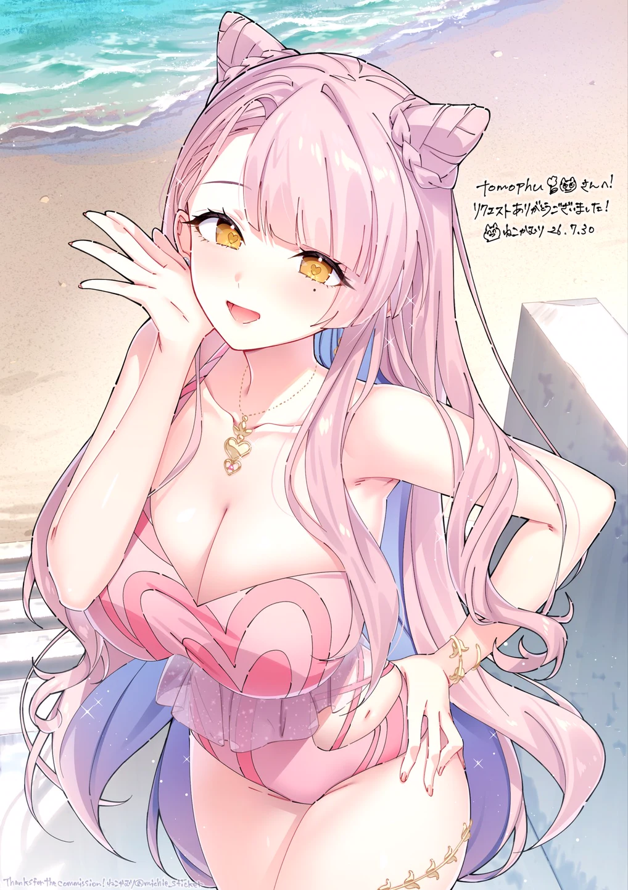

YOUTUBE / LATEST UPLOADS
動画が表示されない場合は、YouTubeで最新動画を見る ↗
VTUBER · VOICE ACTOR · NARRATOR
お酒とゲームと、耳なじみのいい声。
愛神アプロの活動が、ここから全部つながる。

LATEST
動画が表示されない場合は、YouTubeで最新動画を見る ↗

ABOUT APURO
愛神アプロ / Megami Apuro。2021年8月27日VTuberデビュー。飲酒雑談、ゲーム、歌、ASMRを中心に活動するVTuberであり、声優・ナレーター・MCとしても活動。
「大人っぽい声 × 親しみやすいキャラクター」を軸に、ライブ配信から企業PR、イベント、ボイスまで幅広く届けています。
WORKS & ACHIEVEMENTS
配信案件参加
優勝 / サブ目標メンバー120人達成
1位優勝 / 新大久保ビジョン放映 / ABEMA紹介
配信案件参加
PROFESSIONAL VOICE
キャラクターボイス、ナレーション、朗読、MC、ASMR。配信で培ったライブコミュニケーションと、声優・ナレーターとしての表現力を活かします。







FOLLOW & SUPPORT
BUSINESS INQUIRY
ゲームPR・配信案件 / ナレーション・CV / MC・イベント出演 / コラボレーション